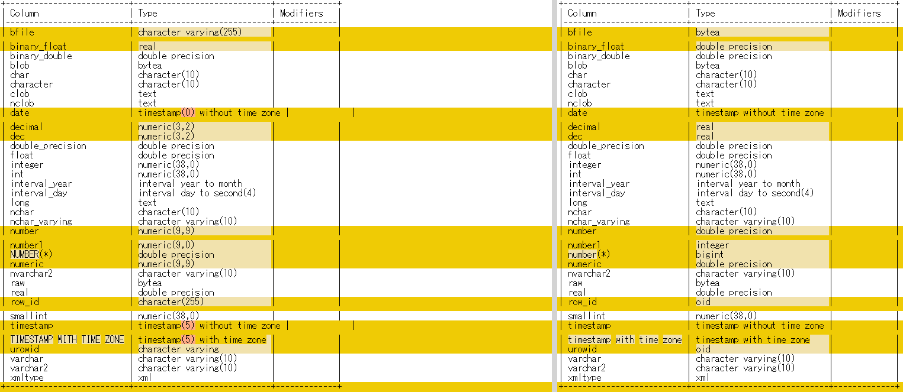

ora2pgとSCTの変換結果の差異
興味本位でOracleからPostgreSQLへスキーマ移行する場合によく使用されるora2pgとSCT(AWS Schema Conversion Tool )の変換結果を比較してみた。ora2pg、SCT共にデフォルト設定で実施してwinmergeで比較してみた。左側がSCT、右側がora2pgとなる。予想以上に結果が異なって驚いた。
ソースとなるOracle側に作ったテーブルはこちら。
CREATE文
CREATE TABLE "DATATYPES"(
"BFILE" BFILE,
"BINARY_FLOAT" BINARY_FLOAT,
"BINARY_DOUBLE" BINARY_DOUBLE,
"BLOB" BLOB,
"CHAR" CHAR(10 BYTE),
"CHARACTER" CHAR(10 BYTE),
"CLOB" CLOB,
"NCLOB" NCLOB,
"DATE" DATE,
"DECIMAL" NUMBER(3,2),
"DEC" NUMBER(3,2),
"DOUBLE_PRECISION" FLOAT(126),
"FLOAT" FLOAT(3),
"INTEGER" NUMBER(*,0),
"INT" NUMBER(*,0),
"INTERVAL_YEAR" INTERVAL YEAR(4) TO MONTH,
"INTERVAL_DAY" INTERVAL DAY(4) TO SECOND(4),
"LONG" LONG,
"NCHAR" NCHAR(10),
"NCHAR_VARYING" NVARCHAR2(10),
"NUMBER" NUMBER(9,9),
"NUMBER1" NUMBER(9,0),
"NUMBER(*)" NUMBER,
"NUMERIC" NUMBER(9,9),
"NVARCHAR2" NVARCHAR2(10),
"RAW" RAW(10),
"REAL" FLOAT(63),
"ROW_ID" ROWID,
"SMALLINT" NUMBER(*,0),
"TIMESTAMP" TIMESTAMP(5),
"TIMESTAMP WITH TIME ZONE" TIMESTAMP(5) WITH TIME ZONE,
"UROWID" UROWID(10),
"VARCHAR" VARCHAR2(10 BYTE),
"VARCHAR2" VARCHAR2(10 BYTE),
"XMLTYPE" "PUBLIC"."XMLTYPE"
);
テーブル定義
SQL> desc DATATYPES;
Name Null? Type
----------------------------------------- -------- ----------------------------
BFILE BINARY FILE LOB
BINARY_FLOAT BINARY_FLOAT
BINARY_DOUBLE BINARY_DOUBLE
BLOB BLOB
CHAR CHAR(10)
CHARACTER CHAR(10)
CLOB CLOB
NCLOB NCLOB
DATE DATE
DECIMAL NUMBER(3,2)
DEC NUMBER(3,2)
DOUBLE_PRECISION FLOAT(126)
FLOAT FLOAT(3)
INTEGER NUMBER(38)
INT NUMBER(38)
INTERVAL_YEAR INTERVAL YEAR(4) TO MONTH
INTERVAL_DAY INTERVAL DAY(4) TO SECOND(4)
LONG LONG
NCHAR NCHAR(10)
NCHAR_VARYING NVARCHAR2(10)
NUMBER NUMBER(9,9)
NUMBER1 NUMBER(9)
NUMBER(* ) NUMBER
NUMERIC NUMBER(9,9)
NVARCHAR2 NVARCHAR2(10)
RAW RAW(10)
REAL FLOAT(63)
ROW_ID ROWID
SMALLINT NUMBER(38)
TIMESTAMP TIMESTAMP(5)
TIMESTAMP WITH TIME ZONE TIMESTAMP(5) WITH TIME ZONE
UROWID ROWID
VARCHAR VARCHAR2(10)
VARCHAR2 VARCHAR2(10)
XMLTYPE PUBLIC.XMLTYPE STORAGE BINARY
変換結果

表形式で記載。右側のora2pgとSCT側がPostgreSQL結果で\dで定義を出力した結果となる。
| No. | Oracle (※descの結果） | SCT (\d メタコマンド結果） | ora2pg (\d メタコマンド結果） |
|---|---|---|---|
| 1 | BINARY FILE LOB | character varying(255) | bytea |
| 2 | BINARY_FLOAT | real | double precision |
| 3 | BINARY_DOUBLE | double precision | double precision |
| 4 | BLOB | bytea | bytea |
| 5 | CHAR(10) | character(10) | character(10) |
| 6 | CHAR(10) | character(10) | character(10) |
| 7 | CLOB | text | text |
| 8 | NCLOB | text | text |
| 9 | DATE | timestamp(0) without time zone | timestamp without time zone |
| 10 | NUMBER(3,2) | numeric(3,2) | real |
| 11 | NUMBER(3,2) | numeric(3,2) | real |
| 12 | FLOAT(126) | double precision | double precision |
| 13 | FLOAT(3) | double precision | double precision |
| 14 | NUMBER(38) | numeric(38,0) | numeric(38,0) |
| 15 | NUMBER(38) | numeric(38,0) | numeric(38,0) |
| 16 | INTERVAL YEAR(4) TO MONTH | interval year to month | interval year to month |
| 17 | INTERVAL DAY(4) TO SECOND(4) | interval day to second(4) | interval day to second(4) |
| 18 | LONG | text | text |
| 19 | NCHAR(10) | character(10) | character(10) |
| 20 | NVARCHAR2(10) | character varying(10) | character varying(10) |
| 21 | NUMBER(9,9) | numeric(9,9) | double precision |
| 22 | NUMBER(9) | numeric(9,0) | integer |
| 23 | NUMBER | double precision | bigint |
| 24 | NUMBER(9,9) | numeric(9,9) | double precision |
| 25 | NVARCHAR2(10) | character varying(10) | character varying(10) |
| 26 | RAW(10) | bytea | bytea |
| 27 | FLOAT(63) | double precision | double precision |
| 28 | ROWID | character(255) | oid |
| 29 | NUMBER(38) | numeric(38,0) | numeric(38,0) |
| 30 | TIMESTAMP(5) | timestamp(5) without time zone | timestamp without time zone |
| 31 | TIMESTAMP(5) WITH TIME ZONE | timestamp(5) with time zone | timestamp with time zone |
| 32 | ROWID | character varying | oid |
| 33 | VARCHAR2(10) | character varying(10) | character varying(10) |
| 34 | VARCHAR2(10) | character varying(10) | character varying(10) |
| 35 | PUBLIC.XMLTYPE STORAGE BINARY | xml | xml |